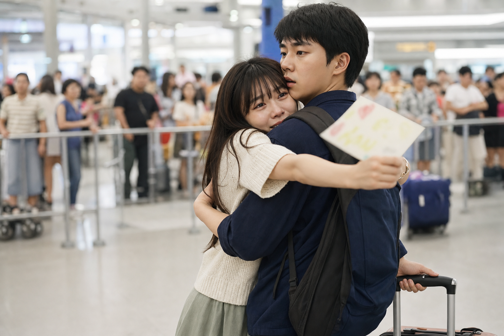

079. 마중 나온 사람
기체가 하강을 시작하자 귀가 먹먹해졌다.
창밖으로 구름 아래 육지가 서서히 드러났다. 용식은 그제야 재킷 안주머니에서 봉투를 꺼냈다. 봉투 안에는 접힌 편지지 한 장과, 오다이바에서 찍었던 프리쿠라 사진의 다른 한 장이 들어 있었다. 편지지에는 또박또박한 글씨가 짧게 적혀 있었다.
`여름 동안 행복했어요. 겨울에 다시 만나요. 그때까지 저도 열심히 기다릴게요. — 유즈키`
용식은 그 짧은 문장을 두 번, 세 번 읽었다. 사진 속에서는 유즈키가 팔짱을 낀 채 활짝 웃고 있었다. 그는 편지지를 다시 접어 봉투에 넣고, 지갑 안쪽 칸에 있던 다른 한 장의 사진 옆에 나란히 끼워 넣었다.
착륙 안내 방송이 나오자 그는 창밖으로 시선을 돌렸다. 인천의 익숙한 활주로가 눈에 들어왔다.
입국장으로 나오는 문이 열리자, 대기하던 인파 사이에서 익숙한 목소리가 먼저 들렸다.
[김초연] "용식아!"
고개를 돌리기도 전에 누군가 달려와 품에 안겼다. 초연이었다. 두 손에는 작은 종이 피켓을 들고 있었는데, 서투른 글씨로 `어서 와` 라고 적혀 있었다. 그녀는 그의 목을 끌어안은 채 한동안 놓지 않았다.
[김초연] "얼마나 기다렸는지 알아? 진짜 두 달 동안 하루도 안 빼놓고 달력에 표시했어."
용식은 그 품 안에서 순간 낯선 감각을 느꼈다. 익숙한 체온, 익숙한 향, 그러나 방금 전까지 옆에 있던 다른 얼굴이 잠깐 겹쳐 지나갔다. 그는 스스로도 놀라 눈을 크게 떴다가, 얼른 초연의 등을 마주 안았다.

[김용식] "미안, 많이 기다렸지."
[김초연] "됐어, 왔으면 됐지."
초연은 눈물을 닦으며 웃었다. 그러나 그 웃음은 오래가지 않았다. 캐리어를 끌고 주차장으로 걸어가는 길에, 그녀의 목소리 톤이 조금씩 달라지기 시작했다.
[김초연] "근데 거기서 진짜 아무 일도 없었지?"
[김용식] "무슨 일이 있어."
[김초연] "학원에 여자들 많았을 거 아니야. 같은 반이나, 뭐, 그런 사람들."
[김용식] "그냥 다 수업 듣는 사람들이야."
[김초연] "사진 봐도 돼?"
용식의 손이 순간 멈칫했다. 폰 안에는 유즈키와 함께 찍은 사진이 몇 장 남아 있었다. 그는 애써 태연한 얼굴로 폰을 꺼내 앨범을 열었다. 다행히 최근 사진 대부분은 어학원 수업 자료나 도쿄 풍경, 혼자 찍은 사진들이었다. 유즈키가 함께 나온 사진은 이미 며칠 전 다른 폴더로 옮겨둔 뒤였다.
[김초연] "여기 이 사람은 누구야?"
초연이 한 장의 사진을 짚었다. 가마쿠라 단체 견학 사진 속, 여러 스태프 중 한 명으로 유즈키가 서 있었다. 얼굴은 작게 나왔지만, 용식은 그 순간 심장이 한 박자 늦게 뛰는 걸 느꼈다.
[김용식] "생활 지원실 스태프. 담당자가 몇 명 있었어."
[김초연] "예쁘다."
[김용식] "그런가."
용식은 최대한 심드렁하게 대답하며 폰을 다시 주머니에 넣었다. 초연은 더 캐묻지 않았지만, 조수석에 앉는 내내 창밖만 바라보며 입을 다물고 있었다. 침묵이 길어지자 용식이 먼저 가방에서 종이봉투 하나를 꺼내 내밀었다.
[김용식] "이거, 공항에서 산 거야. 화과자랑 립밤."
초연의 표정이 그제야 조금 풀렸다.
[김초연] "나 주려고 산 거야?"
[김용식] "그럼 누구 주려고 샀겠어."
초연은 봉투 안을 확인하며 립밤 뚜껑을 열어 향을 맡았다. 그 순간만큼은 아까의 날 선 질문들이 잠깐 잦아들었다. 집으로 가는 차 안에서 그녀는 다시 재잘거리기 시작했다. 방학 동안 있었던 시시콜콜한 이야기, 친구들 근황, 개강하면 같이 하고 싶은 일들. 용식은 그 말들을 들으며 적당히 맞장구쳤지만, 머릿속 한쪽에는 아까 폰 속 사진과 지갑 안의 편지가 계속 걸려 있었다.
집에 도착하자 어머니가 현관까지 마중 나와 그를 꼭 안았다.
[용식 어머니] "많이 탔네. 밥은 제대로 먹고 다녔어?"
[김용식] "그럼요."
짧은 인사를 나누고 방으로 들어온 용식은 캐리어를 열어 짐을 정리하기 시작했다. 옷가지 사이로 공항 상점 영수증과 과자 포장 비닐 조각이 삐져나와 있었다. 그는 지갑을 꺼내 서랍 깊숙한 곳, 예전에 손목시계를 넣어뒀던 칸 안에 밀어 넣었다. 그 순간 노크도 없이 방문이 열렸다.
[김초연] "뭐 해? 짐 다 풀었어?"
용식은 화들짝 놀라며 서랍을 닫았다. 다행히 초연은 문 앞에 서서 방 안을 훑어볼 뿐, 서랍 쪽으로는 시선을 주지 않았다.
[김용식] "어, 거의 다 됐어."
[김초연] "빨리 나와. 오랜만에 우리 동네에서 저녁 먹자."
초연이 먼저 몸을 돌려 나갔다. 용식은 그제야 참았던 숨을 짧게 내쉬었다.
집 근처 삼겹살집은 평일 저녁인데도 자리가 절반쯤 차 있었다. 불판 위에서 고기가 지글거리는 동안 초연은 소주잔을 채우며 다시 말을 꺼냈다.
[김초연] "근데 진짜 이상하다. 두 달이나 있었는데 여자 얘기가 하나도 없어."
[김용식] "학원 다니느라 바빴다니까."
[김초연] "바빠도 밥은 누구랑 먹었을 거 아니야."
[김용식] "그냥 다른 나라 애들이랑. 한국어도 안 통하는데 뭘 어떻게 해."
[김초연] "일본 사람은? 학원 스태프라던 그 여자 말고, 다른 사람은 없었어?"
같은 질문이 조금씩 말만 바꿔 되풀이됐다. 용식은 젓가락으로 고기를 뒤집으며 대답을 한 박자씩 늦췄다. 그때마다 유즈키의 얼굴이 잠깐씩 스쳤다가 사라졌다. 그는 그 생각을 애써 지우며 최대한 심드렁한 표정을 유지했다.
[김용식] "없어. 진짜 학원, 기숙사, 편의점, 그게 다야."
[김초연] "그럼 나 없는 동안 외로웠겠네."
말투가 갑자기 누그러졌다. 초연은 소주잔을 비우고는 그의 팔을 툭 쳤다.
[김초연] "그러니까 오늘부터 밀린 거 다 채워야 돼. 알았지?"
[김용식] "뭘 채워."
[김초연] "데이트. 두 달 치."
용식은 그 말에 짧게 웃으며 잔을 부딪쳤다. 겉으로는 편안한 얼굴이었지만, 속으로는 아까부터 계속되던 질문들의 여운이 가시지 않았다. 서랍 속 지갑과, 아직 답장을 쓰지 못한 이메일 주소 하나가 자꾸 마음 한쪽에 걸렸다.
집으로 돌아와 씻고 나온 뒤, 용식은 방문을 잠그고서야 다시 서랍을 열었다. 지갑 속 사진 두 장은 그대로였다. 그는 그 사진을 한참 들여다보다가, 다시 서랍 깊숙이 밀어 넣고 위에 낡은 손목시계 상자를 겹쳐 올렸다. 두 겹의 비밀이 같은 서랍 안에 나란히 쌓였다.